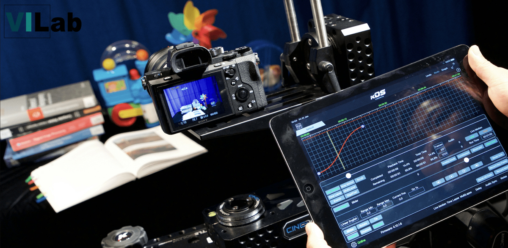

Type of award PhD Research Studentship
Department of Computer Science, Visual Information Laboratory
Scholarship Details Minimum £17,668 p.a. in 2023/24
Duration 3.5 years
Eligibility Home (UK) and EU citizens who have confirmation of UK settlement or presettlement status under the EU Settlement Scheme
Start Date From Sept 2023
Broadcasters and streaming organisations are commissioning content with increasingly challenging acquisition specifications that extend our experiences into faster, smaller, more colourful, darker and generally more immersive spaces. This project aims to create an AI enabled production workflow that jointly optimises low light content addressing denoising, contrast enhancement and colorization. Distortions are endemic in low-light video and noise increases with decreasing light intensity. While faster lenses support wider apertures, and high quality sensors offer improved low-light performance, there is still a significant gap between the demands of commissioners and the capability of acquisition hardware. Distortion management is thus essential in any production workflow.
Launched in April 2021, MyWorld is a brand new five-year programme, the flagship for the UK’s creative technology sector, and is part of a UK-wide exploration into devolved research and development funding. Led by the University of Bristol, MyWorld will position the South West as an international trailblazer in screen-based media. This £46m programme will bring together 30 partners from Bristol and Bath’s creative technologies sector and world-leading academic institutions, to create a unique cross-sector consortium. MyWorld will forge dynamic collaborations to progress technological innovation, deliver creative excellence, establish and operate state of the art facilities, offer skills training and drive inward investment, raising the region’s profile on the global stage.
Applicants must hold/achieve a minimum of a master’s degree (or international equivalent) in a relevant discipline. Applicants without a Masters qualification may be considered on an exceptional basis, provided they hold a first-class undergraduate degree. Please note, acceptance will also depend on evidence of readiness to pursue a research degree.